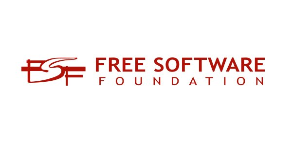
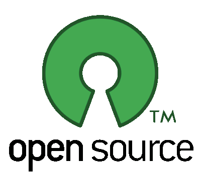
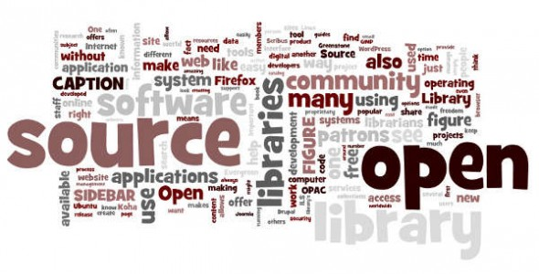

Free Software Vs Open Software
Open Source Software and Free Software are the two movements that have sprung up to counter the rapid trend of commercialized proprietary software. From the name ‘Open Source’, you can already deduce that the source code of the software is freely available for other people to see and study. In truth, the scale of open source software has more provisions than just having a visible source code. There are a lot of definitions for Free Software, the most common of which is ‘freeware’, or software that you do not have to pay for to use. However, the Free Software movement specifies that the freedom in free software extends far beyond the cost of the software. Basically, a user can do anything to Free Software, as long as the resulting software is also free.
Free Software
Free software is by no means a new term. The phrase was coined by Richard Stallman in the 1980s when he started the GNU Project (to create a free operating system) and founded the Free Software Foundation (to advocate on behalf of free software). The phrase refers to software that users can safely run, adapt, and redistribute without legal restraint. The Free Software Foundation provides these “four essential freedoms” that software must respect in order to be considered free:
- The freedom to run the program, for any purpose (freedom 0).
- The freedom to study how the program works, and change it so it does your computing as you wish (freedom 1).
- The freedom to redistribute copies so you can help your neighbor (freedom 2).
- The freedom to distribute copies of your modified versions to others (freedom 3).
The foundation created the GNU General Public License, commonly referred to as the GPL, as a copyleft license that developers can distribute their software under to qualify it as free and ensure that it stays that way.
Open Source Software
Open source software is software with source code that is publicly available under a license that gives users the right to study, change, and distribute the software as they wish. The term was coined in 1998 when a group of individuals pushed for title that was less ambiguous than free software. They changed the emphasis from freedom to security, cost savings, transparency, and other pragmatic benefits. The term is more palatable for the corporate world, even though it refers largely to the same software. While the GPL isn’t the only supported license, it remains one of the most prominent. Like free software, open source software can be distributed for free, but it doesn’t have to be.
Relationship between the Free Software movement and Open Source movement
The Free Software movement and the Open Source movement are like two political camps within the free software community. Radical groups in the 1960s developed a reputation for factionalism: organizations split because of disagreements on details of strategy, and then treated each other as enemies. Or at least, such is the image people have of them, whether or not it was true. The relationship between the Free Software movement and the Open Source movement is just the opposite of that picture. We disagree on the basic principles, but agree more or less on the practical recommendations. So we can and do work together on many specific projects. We don't think of the Open Source movement as an enemy. The enemy is proprietary software.
Why “Free Software” is better than “Open Source”
This article has been superseded by a major rewrite, “Open Source” misses the point of Free Software, which is much better. We keep this version for historical reasons.
While free software by any other name would give you the same freedom, it makes a big difference which name we use: different words convey different ideas. In 1998, some of the people in the free software community began using the term “open source software” instead of “free software” to describe what they do. The term “open source” quickly became associated with a different approach, a different philosophy, different values, and even a different criterion for which licenses are acceptable. The Free Software movement and the Open Source movement are today separate movements with different views and goals, although we can and do work together on some practical projects. The fundamental difference between the two movements is in their values, their ways of looking at the world. For the Open Source movement, the issue of whether software should be open source is a practical question, not an ethical one. As one person put it, “Open source is a development methodology; free software is a social movement.” For the Open Source movement, non-free software is a suboptimal solution. For the Free Software movement, non-free software is a social problem and free software is the solution.
Ambiguity
The term “free software” has an ambiguity problem: an unintended meaning, “Software you can get for zero price,” fits the term just as well as the intended meaning, “software which gives the user certain freedoms.” We address this problem by publishing a more precise definition of free software, but this is not a perfect solution; it cannot completely eliminate the problem. An unambiguously correct term would be better, if it didn't have other problems.
Unfortunately, all the alternatives in English have problems of their own. We've looked at many alternatives that people have suggested, but none is so clearly “right” that switching to it would be a good idea. Every proposed replacement for “free software” has a similar kind of semantic problem, or worse—and this includes “open source software.”
The official definition of “open source software,” as published by the Open Source Initiative, is very close to our definition of free software; however, it is a little looser in some respects, and they have accepted a few licenses that we consider unacceptably restrictive of the users. However, the obvious meaning for the expression “open source software” is “You can look at the source code.” This is a much weaker criterion than free software; it includes free software, but also some proprietary programs, including Xv, and Qt under its original license (before the QPL).
That obvious meaning for “open source” is not the meaning that its advocates intend. The result is that most people misunderstand what those advocates are advocating. Here is how writer Neal Stephenson defined “open source”:
Linux is “open source” software meaning, simply, that anyone can get copies of its source code files.
I don't think he deliberately sought to reject or dispute the “official” definition. I think he simply applied the conventions of the English language to come up with a meaning for the term. The state of Kansas published a similar definition: "Make use of open-source software (OSS). OSS is software for which the source code is freely and publicly available, though the specific licensing agreements vary as to what one is allowed to do with that code."
summary
- Free Software is Open Source Software, but Open Source software may not necessarily be Free Software.
- Open Source software can work with other proprietary software, while Free Software does not allow the same.